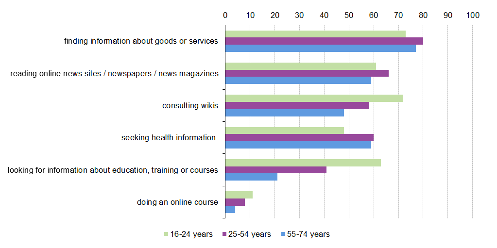
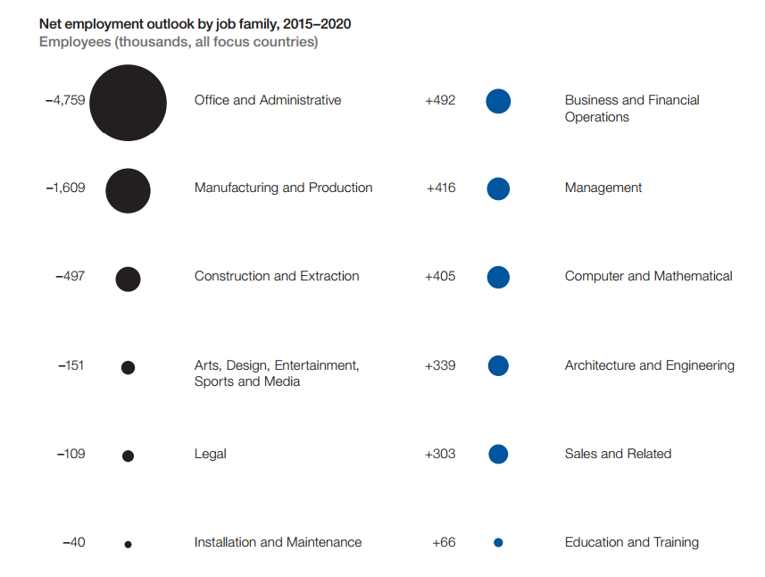
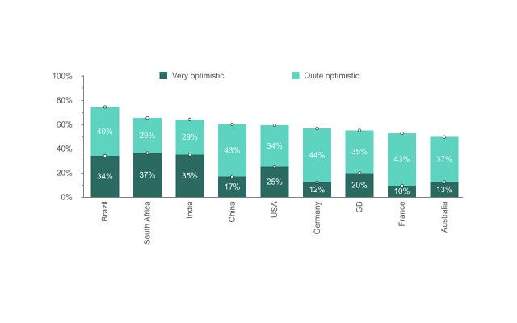

You have a job. You feel secure. You work hard to provide for the ones you love. All of a sudden, your expertise is unnecessary, quite frankly — useless. You’re useless. From irreplaceable, you’ve become replaceable. That’s how an ordinary man felt when the industrial revolution happened.
Until recently, I thought we’ll feel the same way when the next revolution happens. We’ve compared the industrial revolution with the technological revolution that’s about to take place sometime in the near future. We’ve argued that the effects on employment will be profound. But is that right? As it turns out — maybe, just maybe, we’ve been wrong all along.
This is a quote from a talk Ray Kurzweil gave recently. The bottom line of his talk is that regardless of the people’s perception that the world is increasingly becoming worse, it’s quite the contrary — we know more about what is happening right now. Brilliant if you really think about it. But could that mean we can potentially know more about what’s in store for us? Quite possibly.
People in the 1760’s had no idea what’s about to hit them. They had no idea that the manufacturing process will go from hand production methods to machines, new chemical manufacturing and iron production processes, improved efficiency of water power, the increasing use of steam power, the development of machine tools and the rise of the factory system. And how could they? Information was scarce and unevenly distributed.
But what about the people of today? Do we know what’s about to hit us? As we can see from the figure bellow the daily barrage of information is so significant that, practically, we should be aware of almost anything that has even the slightest chance of happening.
Eurostat. Use of internet for access to information and learning purposes. Proves the significance of information in our society. Glad to see the results for information about education, training or courses.
Make no mistake, the economy will change, demand will change and automation will replace jobs. The question we should be asking ourselves is not if, but when. Take a look at this excerpt from The Future of Jobs, a study conducted by the World Economic Forum.
The Future of Jobs Employment, Skills and Workforce Strategy for the Fourth Industrial Revolution, World Economic Forum, January 2016
Pretty self-explanatory. If we think about it, though, there’s a pattern. To the left we can see jobs that rely on quantity, to the right — jobs that rely on quality. Quantity is easily automated, quality, on the other hand, is not.
Due to education costs, young people in developing countries rely on the internet for education, thus increasing the amount of skilled people. Most of the educational material available online is often more up to date, than courses taught in universities.
It’s worth mentioning that developing countries will probably gain the upper hand when it comes to staying up to date with trends and developments in technology, even though people in those countries face a steep learning curve.
Think about how much tech work is being outsourced to India, Indonesia, Singapore and we’ll probably find out why it’s so important for the people there to stay up to date with technology. Oh, and compared to Europe and USA, they certainly feel more optimistic when asked how they feel about future jobs prospects. 
The industrial revolution dramatically affected many countries, and, quite possibly, the climate as well. Among its many downsides, there are a few significant upsides, which are likely to occur again when sweatshops, for example, are automated.
If we look at “The Industrial Revolution and Economic Growth” by Hartwell, we can see that there was an increase in real wages, that led to significant improvements in the standard of living. An excellent example is the changes in diet that occurred. The consumption of meat, sugar, tea, beer, and eggs all increased. An even better indication of the rising affluence was the great increase of imported foods. Meanwhile, meat, vegetables, and fruits, long considered luxuries, were by 1850 eaten regularly.
Let’s look at another study, “The Industrial Revolution 1780–1860: A Survey”, conducted by Donald McCloskey and Roderick Floud. We can see right away how we failed to take into account the significant improvement in life expectancy that took place during the Industrial revolution. The great population explosion, the steep fall in death rates. Even in cities, where living conditions are said to have been the worst, mortality rates improved. Deteriorating living conditions and longer life spans are difficult positions to reconcile. Clearly, improving mortality rates indicate that the standard of living rose during the industrial revolution. It all makes so much sense — taking people out of the unhealthy production environment, inevitably leads to a longer, healthier lifespan. I am not saying that people were better off when the revolution happened, but in the long run, life got better.
Could information and knowledge bring to an end the reign of the thesis exposed in Leonard E. Read’с essay “I, Pencil”? Economists and businesses argue that automation will replace lower level employees, possibly increasing demand for educated, high-level employees. Leonard Read’s idea is that people are limited to the things they can do. The pencil talks about what it is made of, showing all the people necessary to make it. Unfortunately, none of these people actually know how to make the pencil all by themselves. The pencil is created because of natural forces that cause one to do what they know in exchange for other goods or payment. Let’s think about it for a second. Being a low-level employee means you lack education, and valuable skill sets, making you a perfect fit for exploitation. Education, on the other hand, gives us access to knowledge and understanding of how things work, allowing us to do more than just one thing.
This is the first time in our history in which, through information, and equipped with an understanding of what is happening around us, we can easily predict and shape, rather than just react to, seismic change.Today, well aware of what’s coming, we have the chance to make a choice whether to accept future change as the destroyer of worlds or to adapt, and thus profoundly change our live’s for the good.